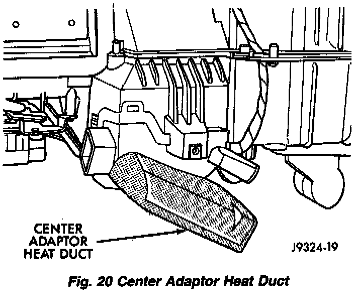
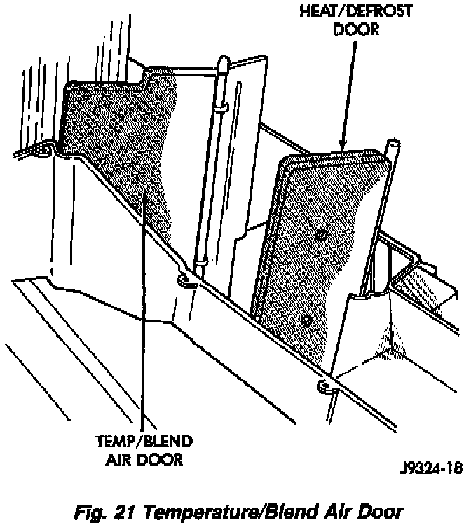

Air Door: Service and Repair
REMOVAL1. Remove the heater-A/C unit from the vehicle.
Under Heating and Air Conditioning/Service & Repair Service and Repair
2. Turn the heater-A/C unit upside down.
Fig.20 Center Adaptor Heat Duct:

3. Remove the retaining screws holding the two halves together. Remove the center adaptor heat duct and remove the screw.
4. Disconnect the electrical connectors.
Fig.21 Temperature/Blend Air Door:

5. Remove the bottom half of the heater-A/C unit.
6. Remove the door.
7. To replace the door-to-motor pivot connection, the motor must be removed.
INSTALLATION
1. If removed, install the door-to-motor pivot connection. Position the motor and tighten the screws.
2. Install the door.
3. Position the top half of the heater-A/C unit onto the bottom. Be sure the door pivot pins align with the pivot holes.
4. Carefully turn the heater-A/C unit over. Install and tighten the screws.
5. Snap on the lower center air duct.
6. Connect the electrical connectors.
7. Install the heater-A/C unit into the vehicle.
Service and Repair